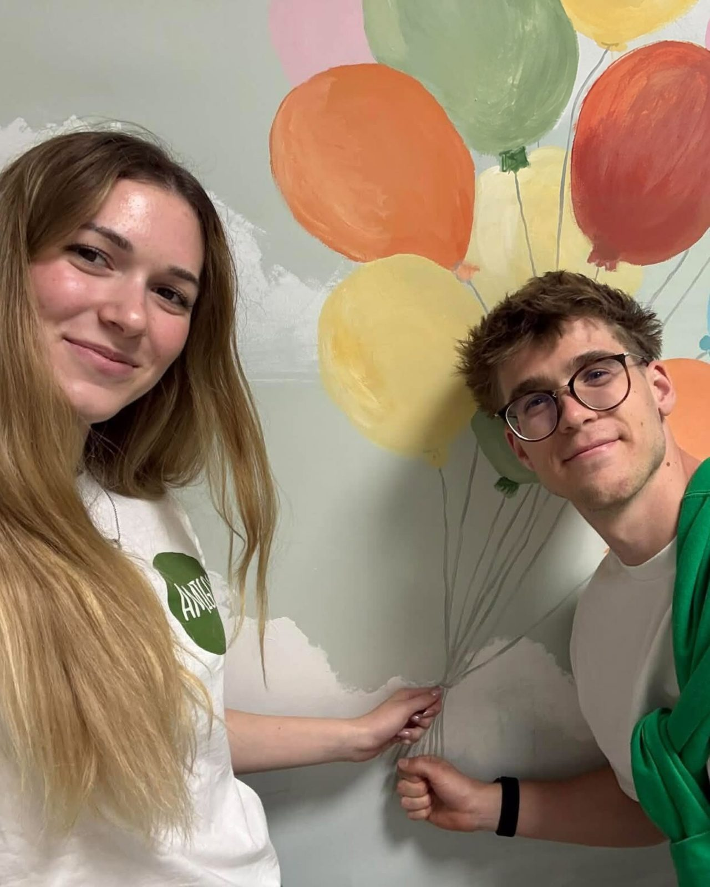
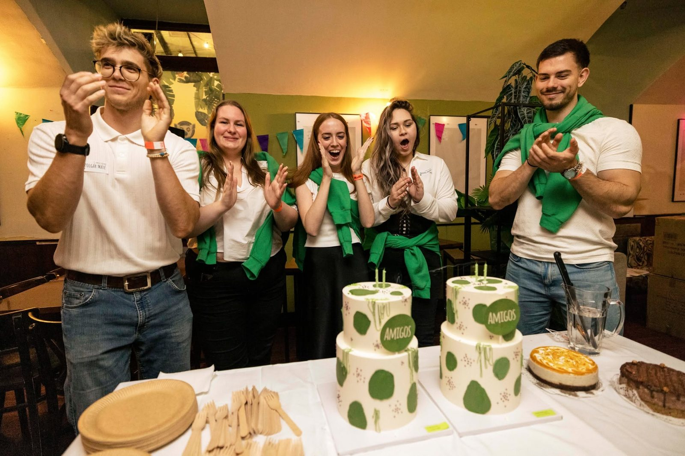
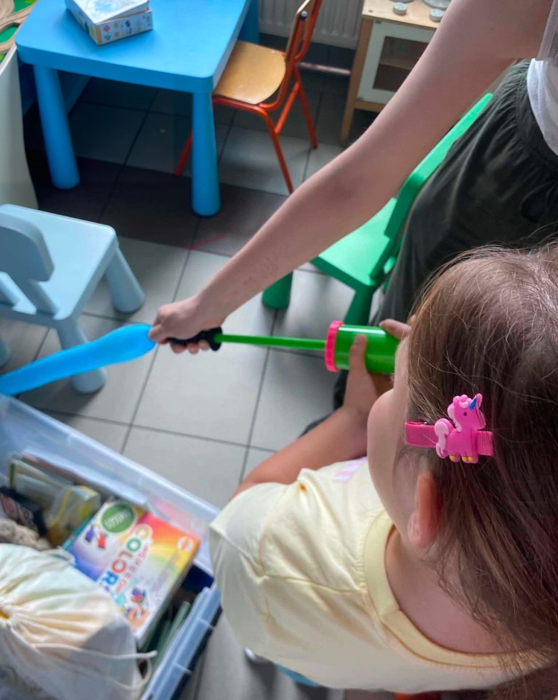

1A · Toronyépítés a kórházi ágynálcsak a gyermek keze látszik

1B · Felolvasás az ágy mellettegyértelműen kórház

1C · Orvosos játékAmigo arca, gyermek háttal

1D · Kisvasútmost a Munkánk heróban

1E · Játék az asztalnález van most
Pillérenként válassz egyet (pl. 1B, 2A, 3A, 4A). A sárga keretes a mostani.



